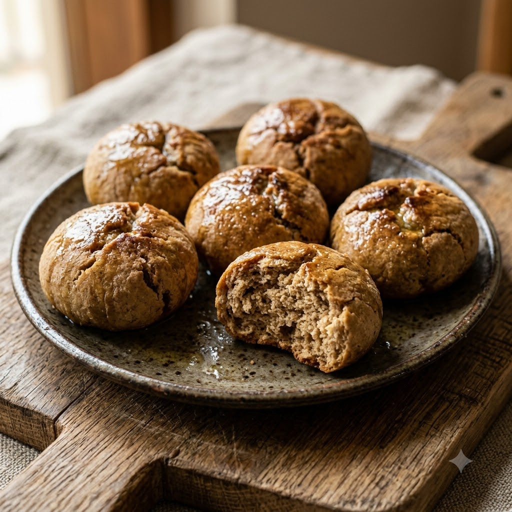

Airfryer – Bake 190°C 28 min makes ~8
Prep ahead: Rest the dough for 20 minutes before shaping so it firms up and holds together while baking.
Ingredients
Method
Tip: Serve with the Everyday Toor Dal or Cholar Dal recipe elsewhere in this book for the full dal-baati experience.